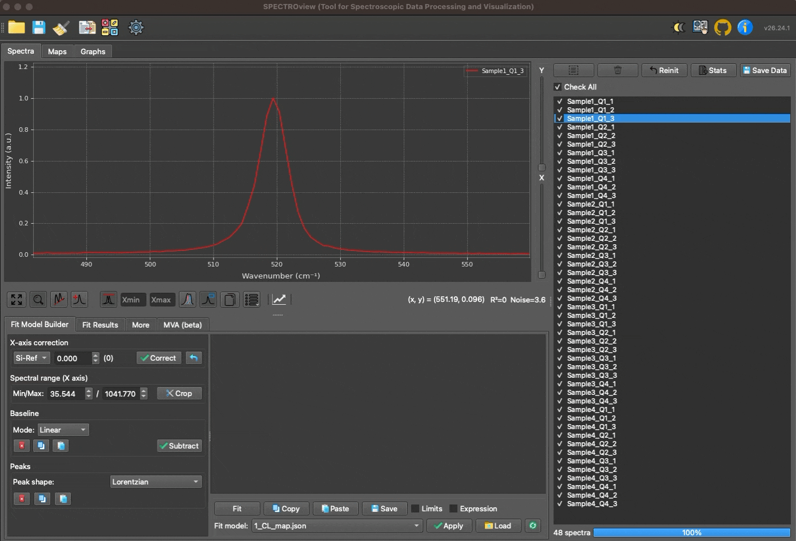
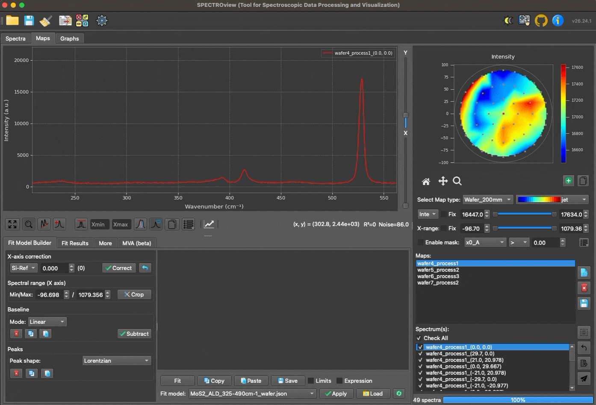
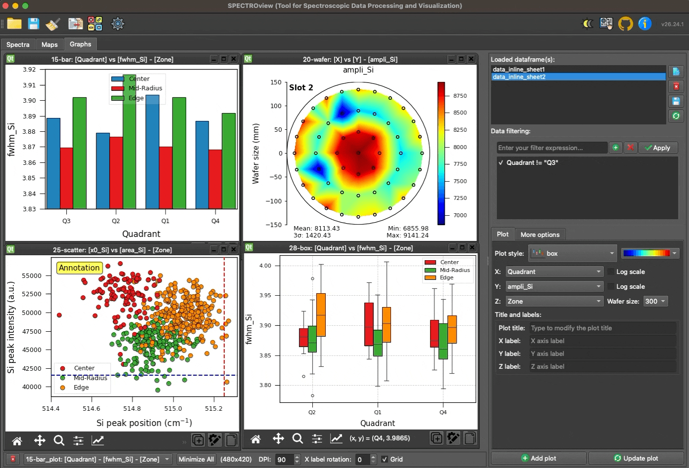

Home


SPECTROview is an Open-Source Application for Interactive Spectroscopic Data Processing, Fitting, and Visualization.
It supports discrete spectra and hyperspectral datasets such as 2D maps and wafer maps,
with integrated visualization tools that streamline your analytical workflow.
Key Features¶
-
High-Performance Vectorized Batch Fit Engine (
VBF Engine)
Achieves very fast fitting speeds through batched matrix operations, capable of simultaneously fitting multiple spectra or large 2D maps.
-
Custom Fit Models
Construct customized fit models for specific spectroscopic profiles and reuse them to rapidly analyze new datasets.
-
Versatile Data Processing
Seamlessly process both 1D spectral data and 2D hyperspectral data.
-
Unified Results
Collect and compile all best-fit results with a single click.
-
Advanced Visualization
Dedicated workspace for generating fast, publication-ready data visualizations.
-
Optimized User Interface
Designed for quick inspection, filtering, and comparison of large spectral datasets.
Demonstrations¶
Dedicated workspaces for discrete spectra, hyperspectral data, and advanced visualization.

Design custom fit models and simultaneously process multiple spectra with the VBF Engine.

Rapidly generate publication-ready data visualizations with the built-in Graphs workspace.

Documentation¶
-
Installation
Install and launch in seconds via PyPI. Easily update to the latest version with a single command. -
User Manual
Step-by-step guides covering all features, from data loading to advanced fitting and visualization. -
Developer Guide
Architecture overview, data pipeline internals, and contribution guidelines for developers. -
API Reference
Detailed reference for all modules: spectra processing, 2D maps, graphs, and calculators. -
Changelog
Latest updates, release notes, bug fixes, and new feature announcements.
Acknowledgements¶
This work was carried out at the CEA — Platform for Nanocharacterisation (PFNC) and supported by the "Recherche Technologique de Base" program of the French National Research Agency (ANR).
Citation¶
If you use SPECTROview in your work, please cite:
Le, Van Hoan. "SPECTROview: An Open-Source Application for Interactive Spectroscopic Data Processing, Fitting, and Visualization." SoftwareX 35 (September 2026): 102862. https://doi.org/10.1016/j.softx.2026.102862.
BibTeX
@article{le2026spectroview,
title = {SPECTROview: An Open-Source Application for Interactive
Spectroscopic Data Processing, Fitting, and Visualization},
author = {Le, Van Hoan},
journal = {SoftwareX},
volume = {35},
pages = {102862},
year = {2026},
month = sep,
publisher = {Elsevier},
doi = {10.1016/j.softx.2026.102862}
}